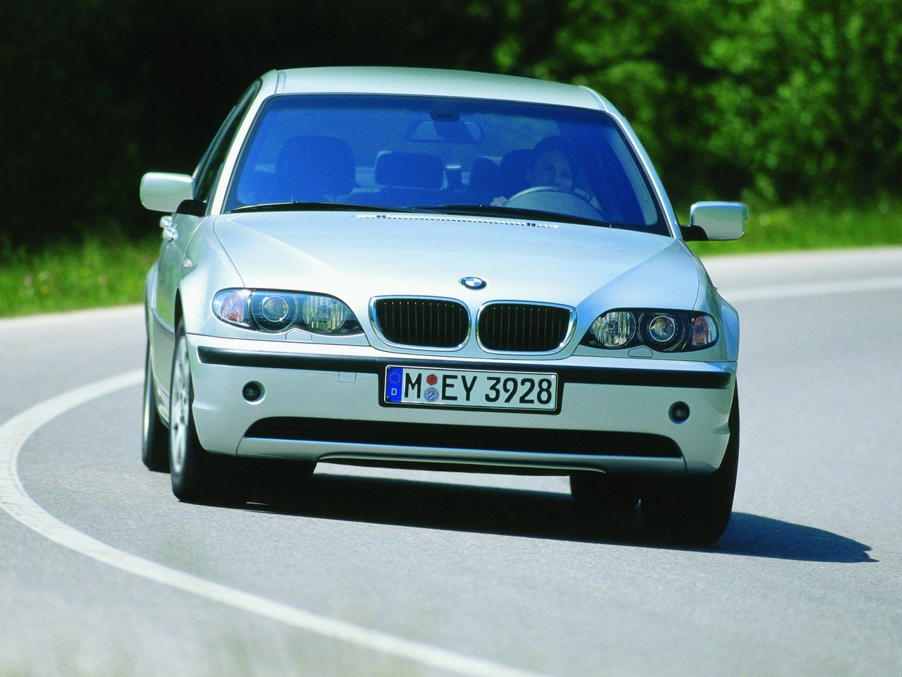

BMW E46
BMW E46 — четвертое поколение 3 серии БМВ пришедшей на смену E36. Эта модель выпускалась c марта 1998 года по февраль 2007 год и производилась на главном заводе в Мюнхене-Швабинг, Регенсбурге и Рослине в Южной Африке.
Производство автомобилей так же было налажена в Китае — Brilliance Motors в Шэньяне, Египте — Bavarian Auto Group в городе Stadt des 6. Oktober и в России — Автотор в Калининграде. BMW E46 стала одним из самых продаваемых автомобилей по сравнению со своим предшественником E36. В салоне было намного жестче и, следовательно, повышенная безопасность.
Типы кузова доступные для Е46 3 серии — седан, универсал, купе, кабриолет и хэтчбек.
.jpg)
.jpg)
- 
Модельный ряд BMW E46
Е46 была выпущена в начале только как седан, с пересмотренным шестицилиндровым двигателем M52TU и четырехцилиндровым бензиновым двигателем M43TU. В стандартную комплектацию всех моделей входила функция безопасности, ABS, контроль тяги, ASC + T, управление торможением в поворотах (управление Brake Control), электронная система распределения тормозных усилий и шесть подушек безопасности. DSC изначально был доступен только в 328i, а затем дополнительно на всех моделях, включая стандартные.
На моделях с 2001 года был также установлен тормозной ассистент (Bremsassistent). В апреле 1999 года поступил в продажу Coupe, а в июне 2001 года Compact. Последняя выпускалась только для стран Европы, Южной Африки, Австралии и Новой Зеландии. BMW E46 имела огромный успех на всех рынках, и многие считали эту модель эталоном производительности в своем классе. Рекордным годом продаж для модельного ряда стал 2002 год, тогда было продано 561 249 автомобилей по всему миру. В октябре 1999 года начались продажи версии Touring.
Так же в этом году на автомобилях E46 был заменен автоматический контроль устойчивости на систему динамического контроля, автоматическая рециркуляция становится стандартом, а 323-я модель получает 15-дюймовые легкосплавные диски как стандартные. BMW M GmbH выпустила высокопроизводительные варианты M3 E46.
Эта версия была оснащена более мощным двигателем, спортивной подвеской, дифференциалом повышенного трения, а также c различными эстетическими изменениями. М3 была доступна только в кузове купе и кабриолет и предлагалась с двумя коробками передачами, стандартной 6-ступенчатой механической или дополнительной последовательной коробкой передач. В марте 2000 года состоялся дебют кабриолета, в июне 2000 года — M3 2S, а в апреле 2001 года M3 2CS.